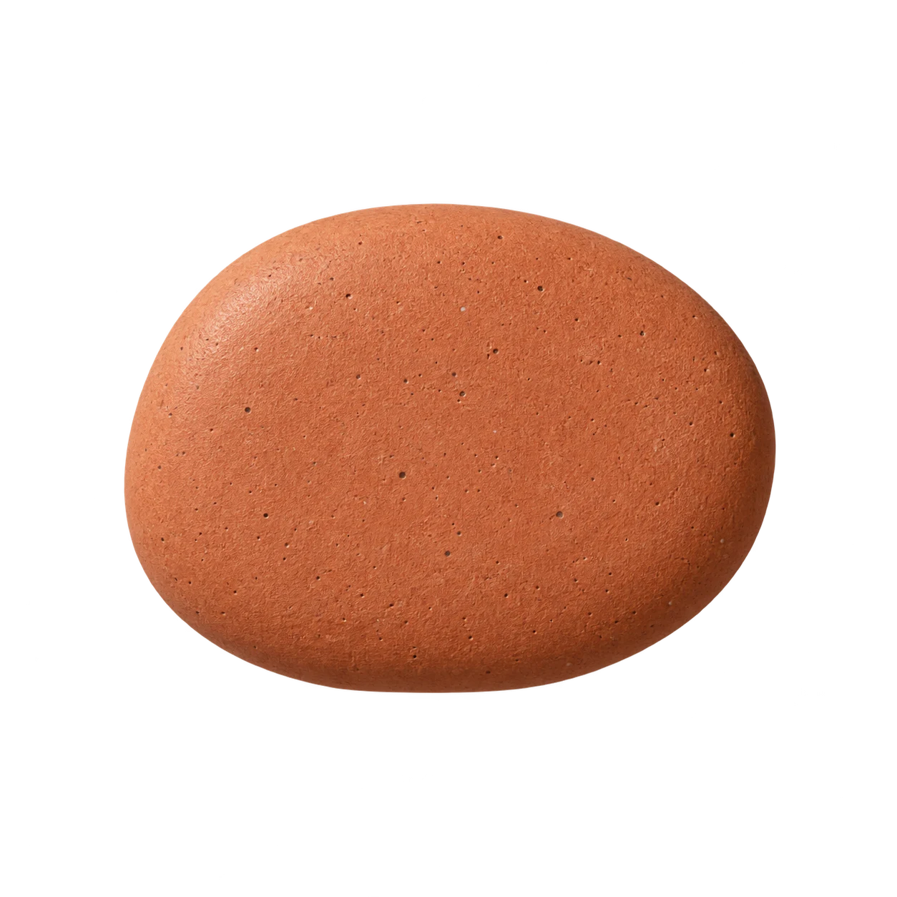

Little chances.
Exact shapes.
A theoretical distribution, laid out in the open.
0outcomes prepared
A local preparation note
Preparing draft
Review0%

Height scale: 0 at floor, 1 at topk = successes
One outcome. All the ways.
Theoretical binomial probabilities for independent identical trials, with two outcomes per trial. No random simulation or observed pebble counts. Pebbles and pegs are decorative; only well height represents probability on the fixed 0 to 1 scale.